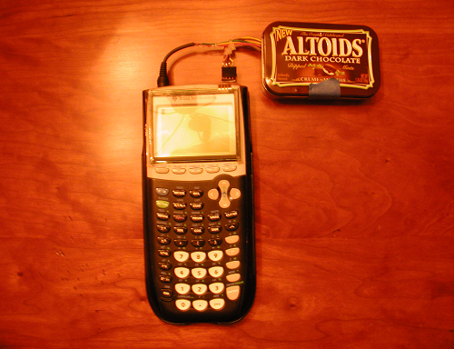

Calculator Touch Screen

I wrote a serial communications library for the TI graphing calculators in Z80
assembly code. Then I used it to write some programs that TI-BASIC programs
could call to send and receive data over serial (using the
Ans
variable). It
made it easy to communicate between calculators and Arduino.
As a demo I connected a Nintendo DS touch screen to an Arduino and then wrote some code to send the touch events to the calculator so I could draw on the calculator with the touch screen.

Done in high school